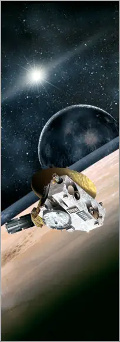

 |
||
|
||
|
In addition to the scientific equipment, there are several cultural artifacts traveling with the spacecraft. These include a collection of 434,738 names stored on a compact disc, a piece of Scaled Composites SpaceShipOne, and an American flag, along with other mementos. About an ounce of Clyde Tombaugh's ashes are aboard the spacecraft, to commemorate his discovery of Pluto in 1930. A Florida-state quarter coin, whose design commemorates human exploration, is included, officially as a trim weight. One of the science packages (a dust counter) is named after Venetia Burney, who, as a child, suggested the name "Pluto" after the planet's discovery.
The US$650 million New Horizons mission was launched January 19, 2006 atop an Atlas V rocket from Cape Canaveral, Florida and has so far traveled 3 billion miles (4.8 billion km). The 1,054 lb (478 kg) nuclear-powered probe is on a 9.5-year mission to fly by Pluto and then on to study selected objects in the Kuiper Belt. Sent on a slingshot trajectory using the gravitational pull of Jupiter, New Horizons passed the orbit of Neptune on August 24 last year and will rendezvous with Pluto on July 14 2015, which it will pass at a distance of 8,000 miles (13,000 km).